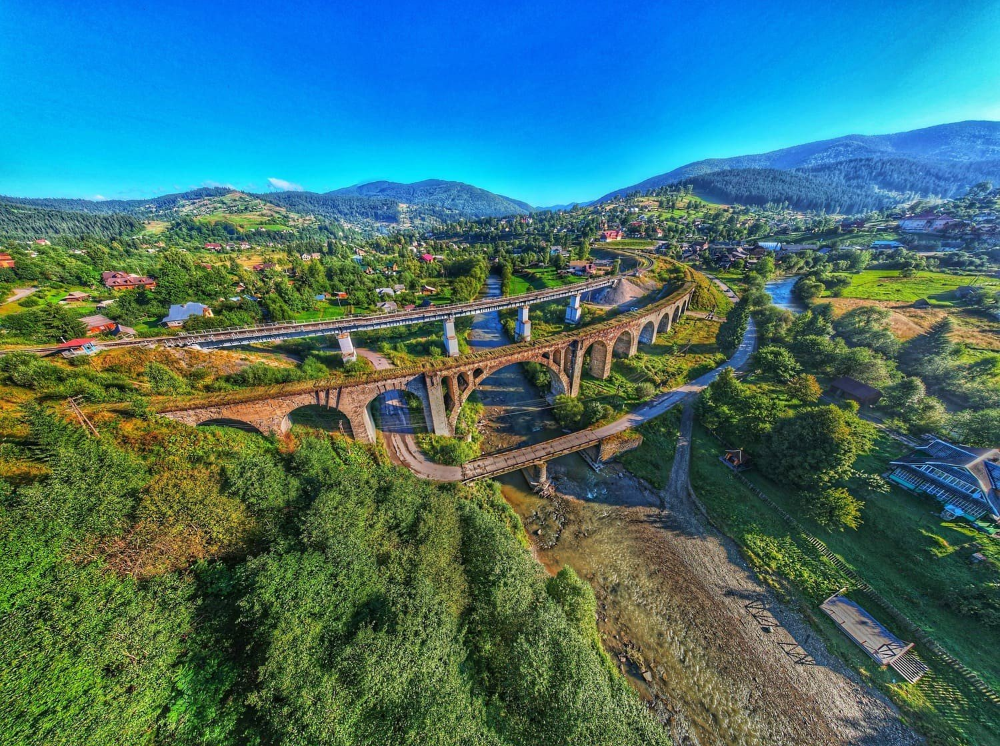

Крошка Дар'я Олександрівна
Дата і місце народження: , селище Солоне, Дніпропетровська область.
Освіта: ЗЗСО «Солонянський ліцей», селище Солоне, Дніпропетровська область;
Національний технічний університет України «Київський політехнічний інститут імені Ігоря Сікорського», факультет інформатики та обчислювальної техніки (ФІОТ), група ІМ-44.
Хобі:
- Довгі прогулянки
- Судоку, кейворди, філворди, сканворди та інші газетні головоломки
- Еволюція
Улюблені фільми та книга:
- Фільм «The Act of Killing», 2012
- Фільм «Mysterious Skin», 2004
- Книга «Тягар пристрастей людських», Вільям Сомерсет Моем, 1915
Ворохта — гірське селище в Надвірнянському районі Івано-Франківської області, розташоване на березі річки Прут на висоті близько 850 метрів над рівнем моря, серед вершин Чорногори та Ґорґан. Це один із найстаріших кліматичних і гірськолижних курортів Карпат: саме тут, на ворохтянських трамплінах, починалася історія українського лижного спорту. Головна пам'ятка селища — кам'яний арковий залізничний віадук через Прут, збудований у 1894–1895 роках для австрійської залізниці. На початку 2000-х рух потягів ним припинили (тепер вони ходять новим мостом поруч), і старий віадук став однією з найвідоміших туристичних локацій Карпат.
